お店のこと
ABOUT
EGG Cafeは、釧路の漁港のそば、くしろ屋内植物園「EGG」に併設されたカフェです。常緑の植物に囲まれた開放的な空間で、コーヒーや彩りのクリームソーダなどを楽しめると紹介されています。
お店のInstagramでは、コーヒー豆と道東の乳製品にこだわっていることが紹介されています。
- 場所: くしろ屋内植物園EGG内(釧路フィッシャーマンズワーフMOOに隣接)
- 姉妹店: and_mist.kushiro(Instagram)
- 営業時間・定休日: 準備中(最新情報はInstagramをご確認ください)
店名の意味は確認できていません。施設名の「EGG」は「Ever Green Garden」の略とする紹介があります。
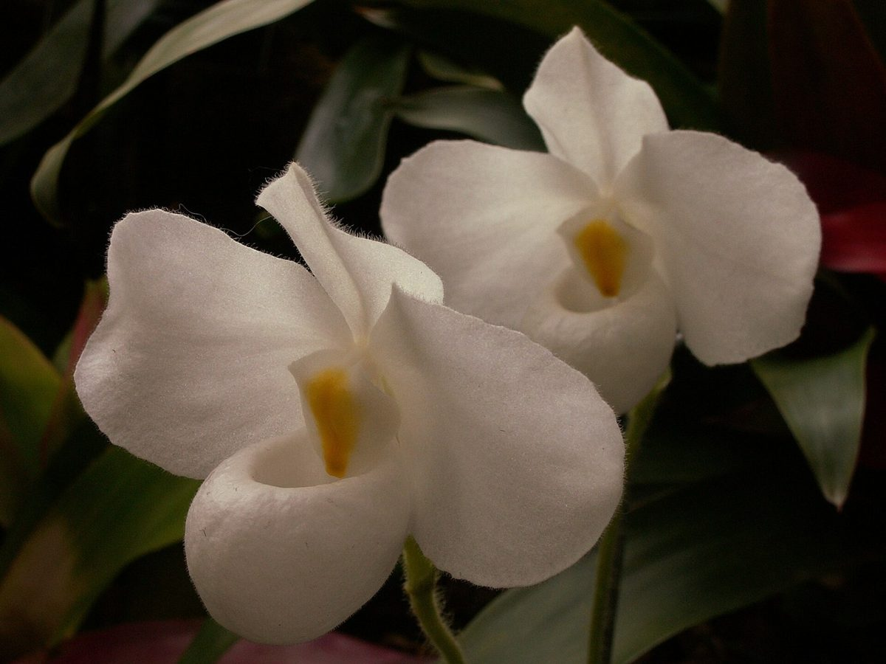
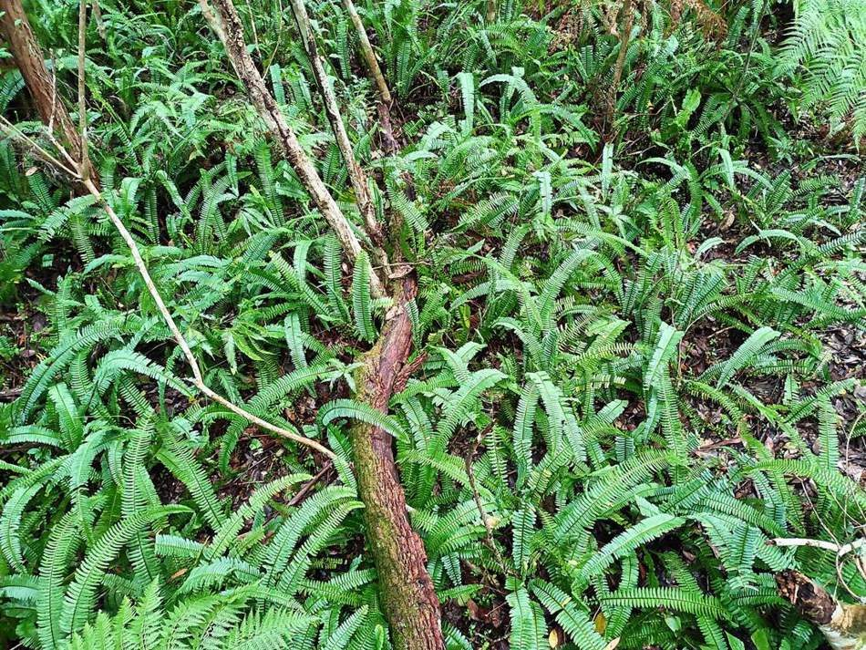
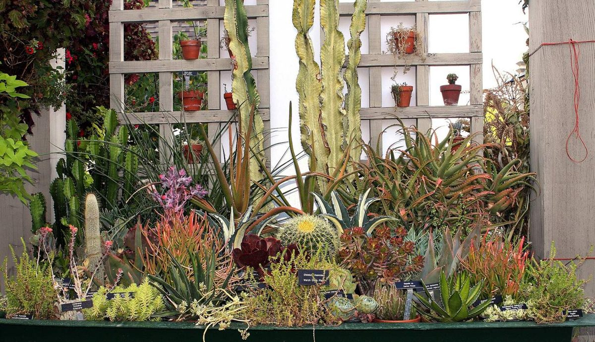
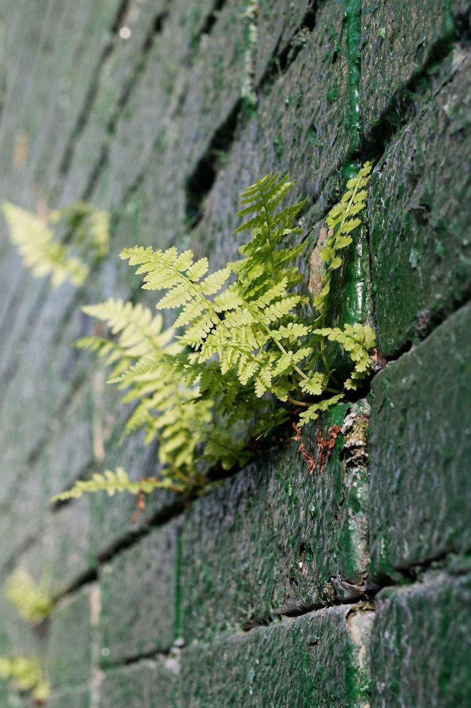
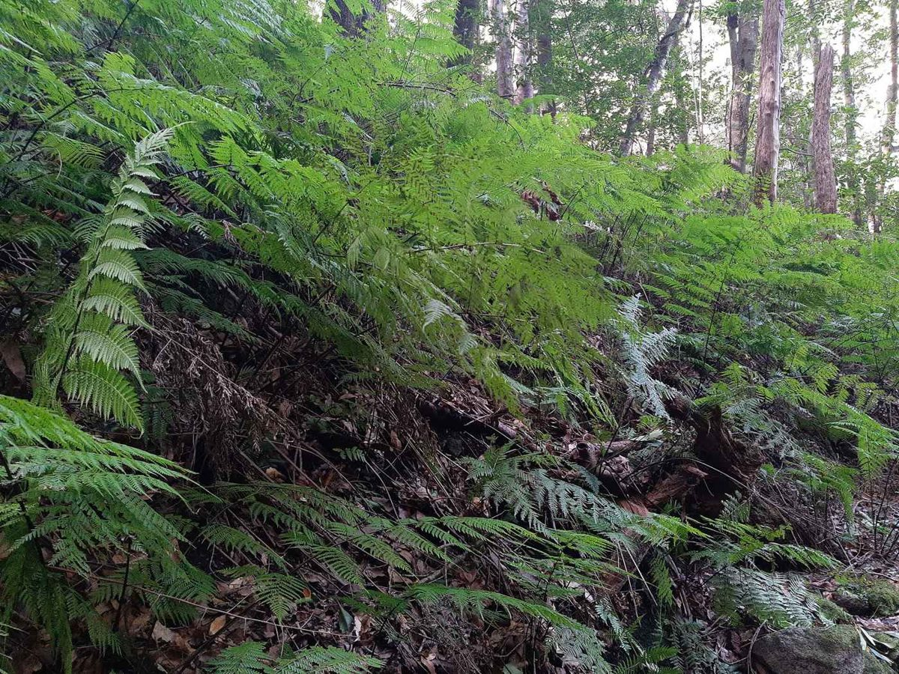
メニュー
MENU
ご紹介の範囲では、コーヒーや彩りのクリームソーダ、釧路の素材を使ったメニューがあるとされています。詳しい品書き・価格は準備中です。以下の写真はイメージです。

コーヒー
詳細は準備中

ミルクのドリンク
詳細は準備中
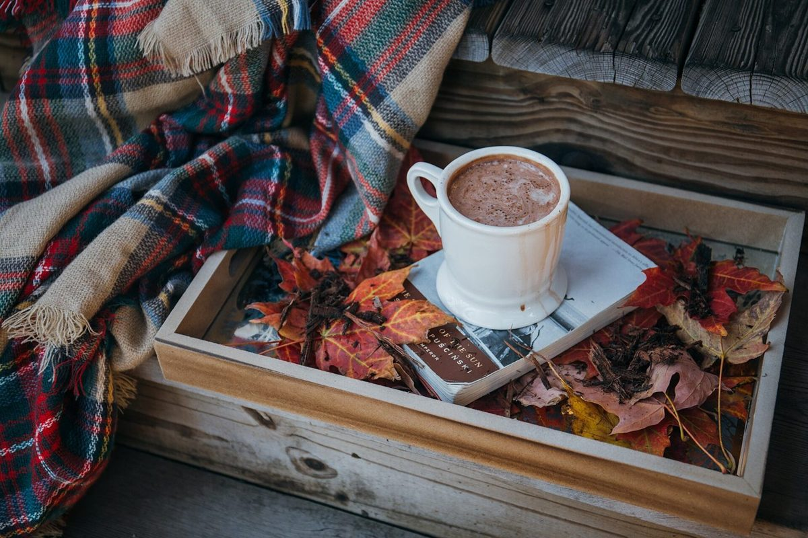
あたたかい一杯
詳細は準備中
口コミ(イメージ例)
VOICE
イメージ例
緑に囲まれた席で、のんびりコーヒーを飲めました。港の景色も気持ちよかったです。
イメージ例
植物園を歩いたあとの休憩にちょうどよい場所でした。家族連れでも入りやすそうです。
イメージ例
ミルクの風味がやさしい一杯。また釧路に来たら寄りたいです。
上記は制作側が作成したイメージ例で、実在のお客様の声ではありません。
アクセス
ACCESS
〒085-0015 北海道釧路市北大通１丁目２(くしろ屋内植物園EGG内)
電話: 準備中 / 営業時間: 準備中
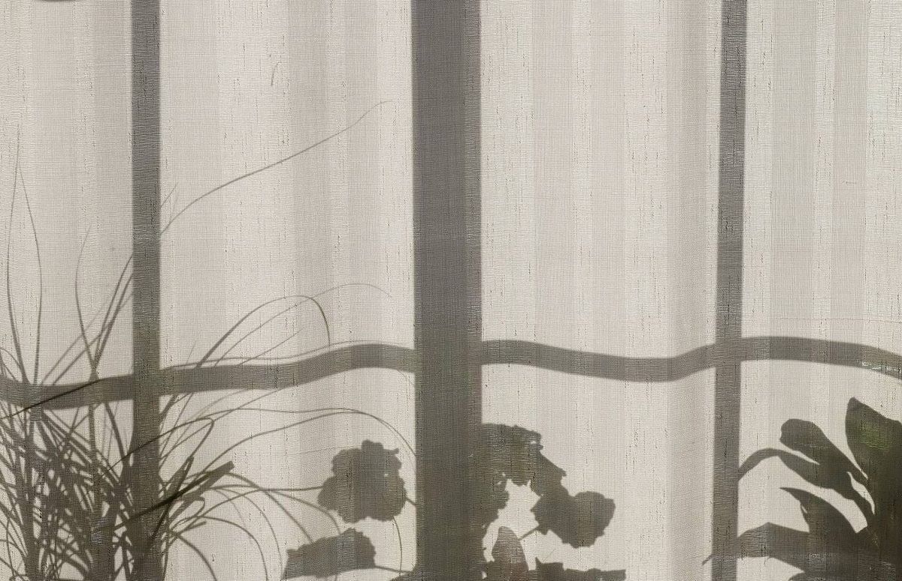
掲載写真はフリー素材のイメージで、店舗の実際の様子ではありません。
写真クレジット
PHOTO CREDITS
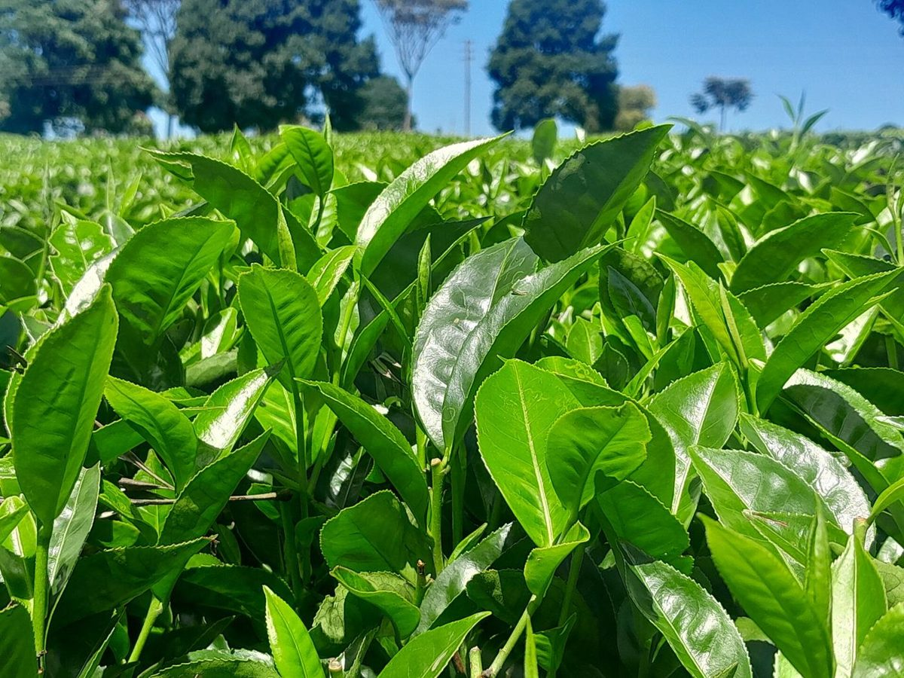
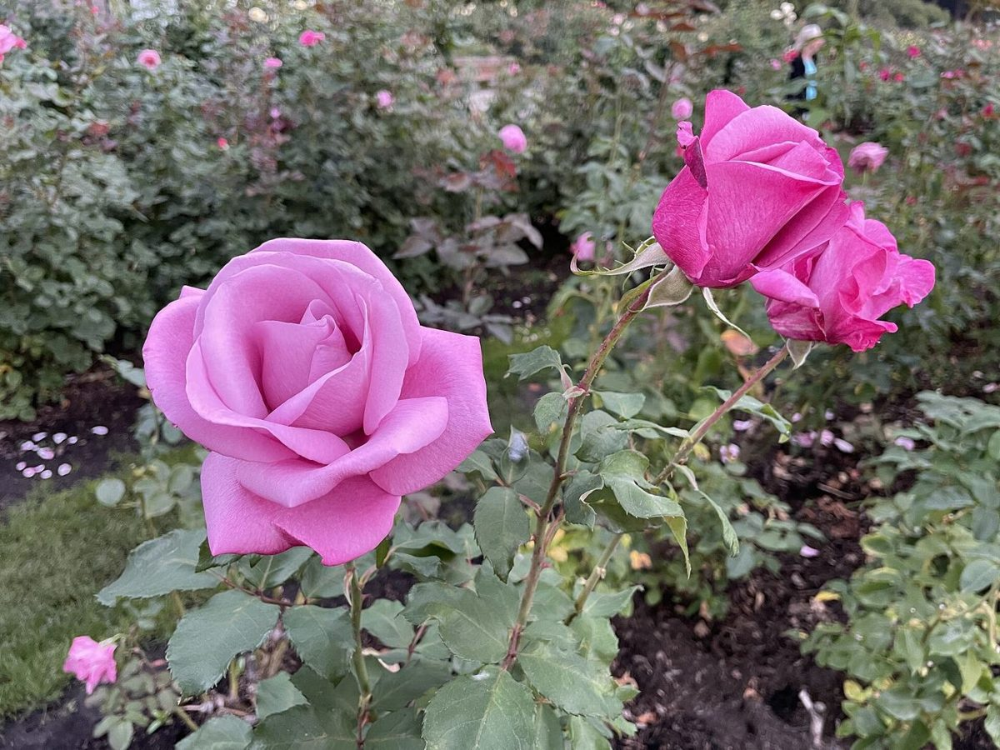
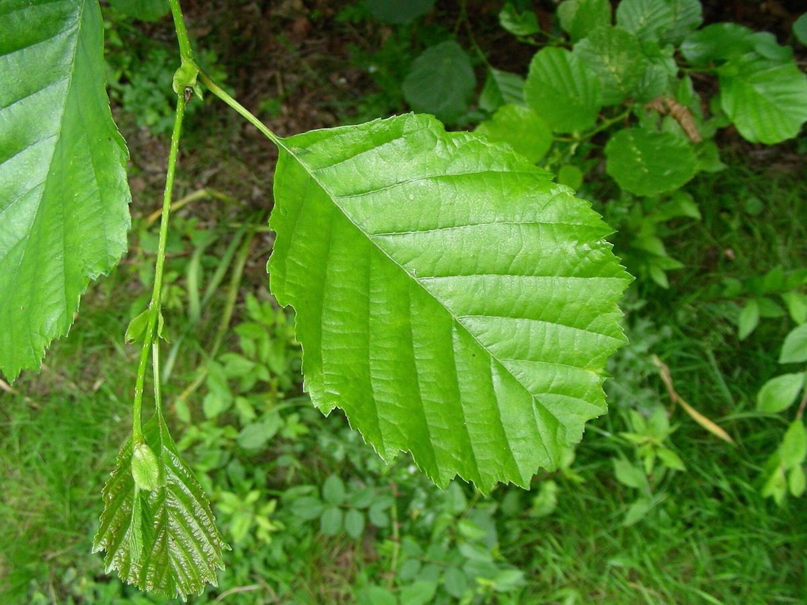
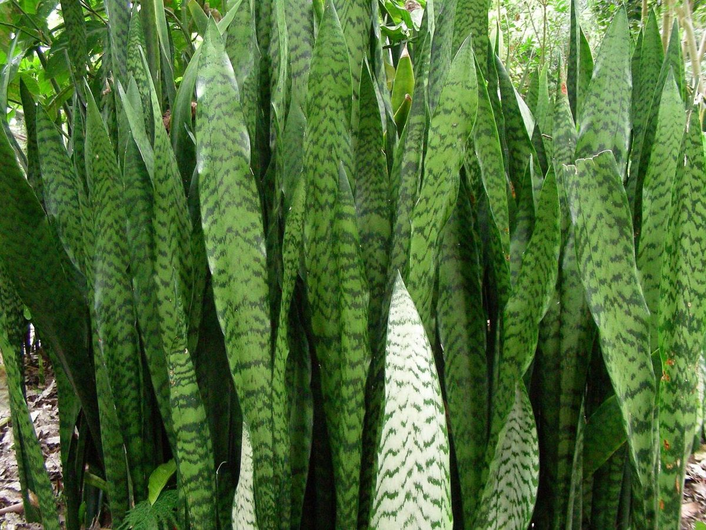
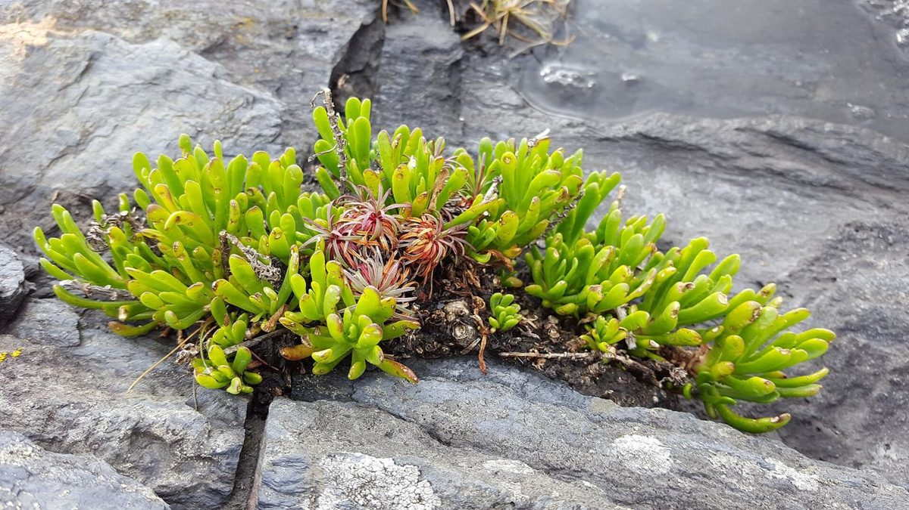
- images/cup.jpg「Cup of coffee on café table」 Ssu / CC BY-SA 4.0 / 出典 / CC BY-SA 4.0(creativecommons.org)(縮小のみ)
- images/latte.jpg「Pumpkin latte Tullys」 さえぼー / CC0 1.0 / 出典 / CC0 1.0(creativecommons.org)(縮小のみ)
- images/cocoa.jpg「Hot chocolate (Unsplash)」 Alisa Anton alisaanton / CC0 1.0 / 出典 / CC0 1.0(creativecommons.org)(縮小のみ)
- images/tea.jpg「Tea Leaves. Also known as "Camellia Sinensis"」 VickyOmondi / CC0 1.0 / 出典 / CC0 1.0(creativecommons.org)(縮小のみ)
- images/rose.jpg「Portland International Rose Test Garden - HCP - October 15, 2022 - 012」 Vulturesong / CC0 1.0 / 出典 / CC0 1.0(creativecommons.org)(縮小のみ)
- images/orchid.jpg「Paphiopedilum delenatii var album, 2015-03-13, Phipps Conservatory」 Cbaile19 / CC0 1.0 / 出典 / CC0 1.0(creativecommons.org)(縮小のみ)
- images/greens.jpg「Plants - Ku-ring-gai chase park - 2023 2」 Xyxyzyz / CC0 1.0 / 出典 / CC0 1.0(creativecommons.org)(縮小のみ)
- images/fernpath.jpg「Trails through fern in Barranco de Galga, La Palma」 Gerda Arendt / CC0 1.0 / 出典 / CC0 1.0(creativecommons.org)(縮小のみ)
- images/fernlight.jpg「Fern lighting」 Shyamal / CC0 1.0 / 出典 / CC0 1.0(creativecommons.org)(縮小のみ)
- images/succulents.jpg「Succulent collection (processed)」 Hardyplants / CC0 1.0 / 出典 / CC0 1.0(creativecommons.org)(縮小のみ)
- images/leaf.jpg「Leaves (16015306695)」 Rob Mitchell / CC0 1.0 / 出典 / CC0 1.0(creativecommons.org)(縮小のみ)
- images/snake.jpg「Leaves (15829604909)」 Rob Mitchell / CC0 1.0 / 出典 / CC0 1.0(creativecommons.org)(縮小のみ)
- images/rockplant.jpg「Succulents of Penally Hill near Boscastle」 Роман Рябенко / CC0 1.0 / 出典 / CC0 1.0(creativecommons.org)(縮小のみ)
- images/brickfern.jpg「Moscow, ferns on a brick wall 07」 Retired electrician / CC0 1.0 / 出典 / CC0 1.0(creativecommons.org)(縮小のみ)
- images/curtain.jpg「Window frame shadow on a curtain (Unsplash)」 Steinar Engeland steinart / CC0 1.0 / 出典 / CC0 1.0(creativecommons.org)(縮小のみ)